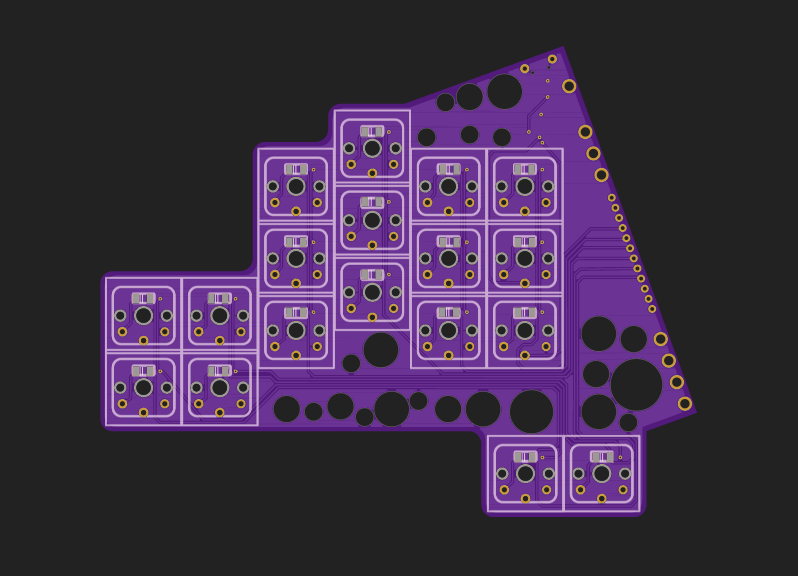
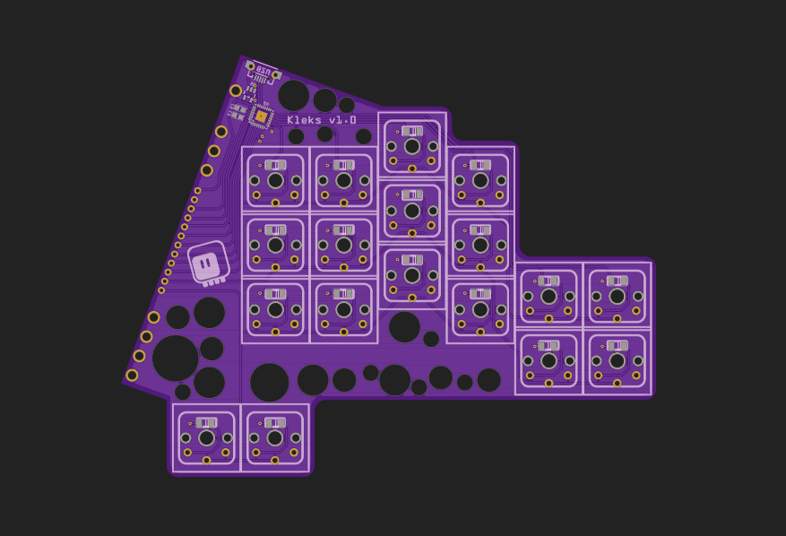

The PCBs¶
Published on 2021-12-09 in Kleks Keyboard.
I designed the PCB for this keyboard the same way as the two-part split keyboards are often designed: the same PCB is used as the left and right part, with switch footprints on both sides, so that it can be flipped. However, in this case I only have a microcontroller on one side, so all the connections from the other half need to be brought over thorough a connector joining the two sides.
 Logically the board has three rows and a dozen columns, which means that I need at least nine traces to cross to the other side. I made it 12 by also adding the connectors for power, ground and reset — they are not needed on the other side of the board, but they are useful for programming the board, and this way I didn’t have to add a separate connector for this.
And before you ask, yes, the holes are purely decorative. I just like how they look, and that part of the PCB was empty anyways.